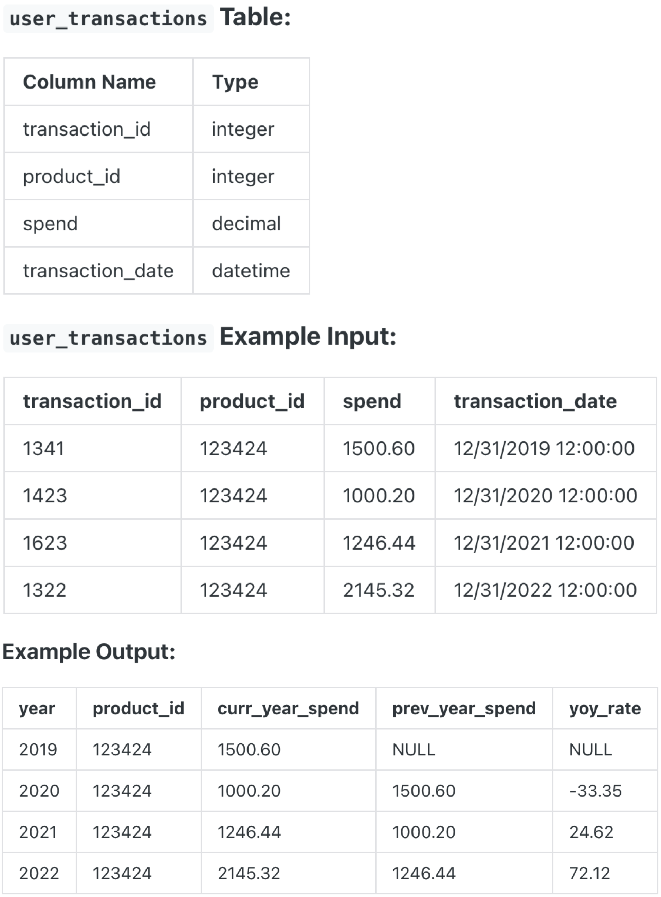

Question sourced from DataLemur.com.
Database: PostgreSQL
Assume you're given a table containing information about Wayfair user transactions for different products. Write a query to calculate the year-on-year growth rate for the total spend of each product, grouping the results by product ID.
The output should include the year in ascending order, product ID, current year's spend, previous year's spend and year-on-year growth percentage, rounded to 2 decimal places.

/*
My strategy: For each product over each year, use the LAG() window
function to create a column for the previous year's spend. Wrap
this query in a CTE, then derive a column for the year-on-year
growth percentage, rounded to two decimal places.
*/
WITH spend_by_year AS (
SELECT EXTRACT(YEAR FROM transaction_date), product_id,
spend AS curr_year_spend,
LAG(spend) OVER(
PARTITION BY product_id
ORDER BY EXTRACT(YEAR FROM transaction_date)
) AS prev_year_spend
FROM user_transactions
)
SELECT *,
ROUND(
((curr_year_spend - prev_year_spend) / prev_year_spend) * 100,
2) AS yoy_rate
FROM spend_by_year;